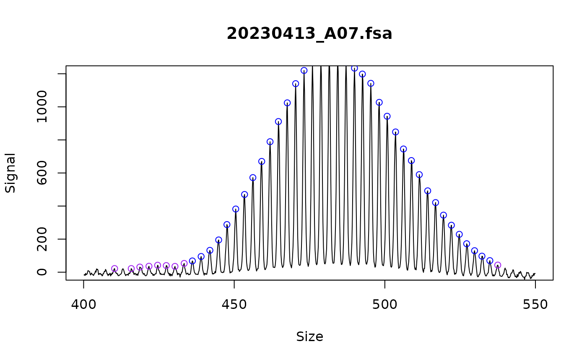

Find fragment peaks
find_fragments.RdFind fragment peaks in continuous trace data and convert to fragments class.
Arguments
- fragments_list
A list of fragments objects containing fragment data.
- config
A trace_config object generated using
load_config().- ...
additional parameters from any of the functions in the pipeline detailed below may be passed to this function. This overwrites values in the
config. These parameters include:smoothing_windownumeric, signal smoothing window size passed to pracma::savgol(). Default:21.minimum_peak_signalnumeric, minimum signal of the raw trace. To have no minimum signal set as "-Inf". Default:20.min_bp_sizenumeric, minimum bp size of peaks to consider. Default:100.max_bp_sizenumeric, maximum bp size of peaks to consider. Default:1000.peak_scan_rampSingle numeric value to indicate how many scans (increasing in signal) should be either side of the peak maxima. Default:5.
Details
This takes in a list of fragments objects and returns a list of new fragments objects.
This function is basically a wrapper around pracma::findpeaks(). If your amplicon is large, there may be fewer scans that make up individual peak. So for example you may want to set peak_scan_ramp as a smaller value.
If too many and inappropriate peaks are being called, this may also be solved with the different repeat calling algorithms in call_repeats().
Examples
fsa_list <- lapply(cell_line_fsa_list[1], function(x) x$clone())
config <- load_config()
trace:::find_ladders(fsa_list, config)
#>
|
| | 0%
|
|======================================================================| 100%
trace:::find_fragments(fsa_list,
config,
min_bp_size = 300
)
#>
|
| | 0%
|
|======================================================================| 100%
# Manually inspect the ladders
plot_traces(fsa_list,
show_peaks = TRUE, n_facet_col = 1,
xlim = c(400, 550), ylim = c(0, 1200)
)
